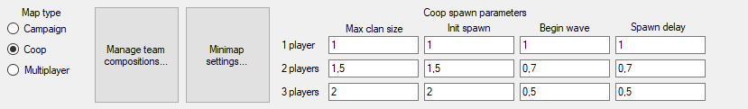
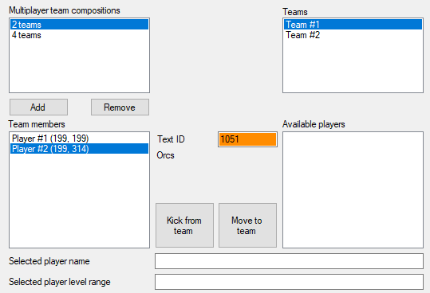
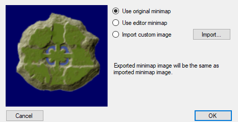

Maps in SpellForce, besides data which directly impacts the look of the map, contains information invisible to the human eye. Those are: coop spawn parameters, minimap data and team compositions.
Every map belongs to one of the following types: Campaign, Coop, Multiplayer.
From here it is assumed that your game directory is C:\SpellForce. Depending on where you installed your game, the folder might be different.
Campaign maps are maps placed in folders C:\SpellForce\map\campaign, C:\SpellForce\map\campaign2 and C:\SpellForce\map\campaign3. When this type is selected, portals other than Portal to Return will work correctly. Additionally, changing building race in map editor will work correctly in this map mode.
Coop maps are maps placed in folder C:\SpellForce\map\lanfreegame. When this type is selected, Minimap settings, Team compositions and Coop spawn parameters are enabled, and placing coop spawns will work correctly.
Multiplayer maps are maps placed in folder C:\SpellForce\map\lan. When this type is selected, Minimap settings and Team compositions are enabled.
Coop spawns have initial parameters set in GdRtsCoopSpawnGroups.lua, however these settings can be further modified depending on now many players are on the map with these parameters.
Pressing this button will open Team compositions window.
Team composition is a configuration of teams on a given map. This configuration describes how many teams there are on the map, how many players are in each team, and which players belong to which team.
You can set up multiple team compositions on a given map. For example, instead of making two maps, one with 2 available teams, and another with 4 available teams, you make one map with two team compositions: one that allows 2 teams, and another that allows 4 teams.
On coop maps, team compositions must have at least 1 available team. On multiplayer maps, team compositions must have at least 2 available teams. In both cases, maximum of 4 teams in one team composition are allowed.
You can add and remove team compositions using respective controls. Using Add button will create a new team composition, with lowest available team count that isn't already on the list.
Selecting a team composition will display all teams available for that composition in Teams list.
All teams available for selected team composition are listed here. Selecting a team will display players assigned to the team in Team players list, and all players not assigned to any team in Available players list.
A player on the map is uniquely represented by a bindstone. There are as many available players on the map as there are bindstones. As long as a player is assigned to any team, bindstone can't be removed from the map.
All players assigned to selected team are listed here. Each player can optionally have a name assigned to it by setting Text ID.
You can remove players from team by pressing Kick from team. Those players will be moved to Available players.
All players not assigned to any team are listed here.
You can add a player to selected team by pressing Move to team. This will remove selected player from Available players, and add it to Team players.
Map selection in SpellForce allows you to preview the maps with embedded minimaps. Turns out, the "minimaps" can be any image, as long as precautions are made.
Following options are available for embedding a minimap: